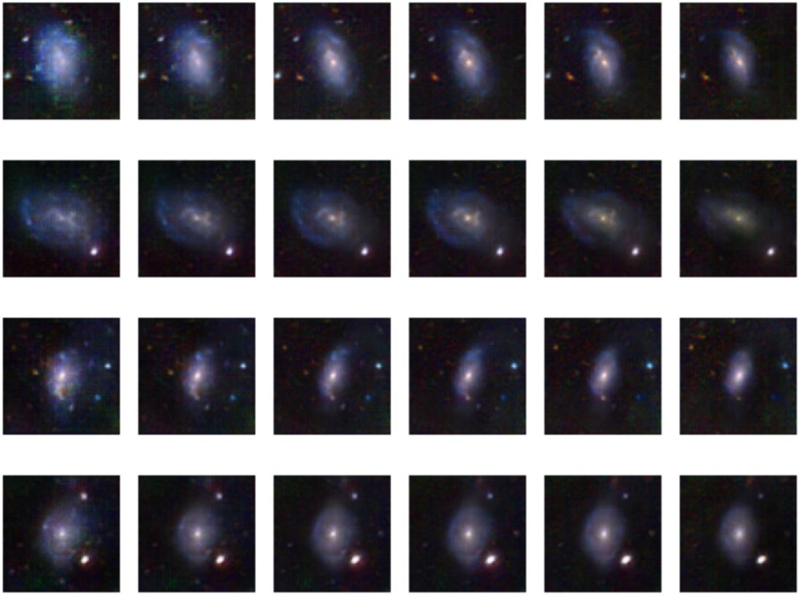
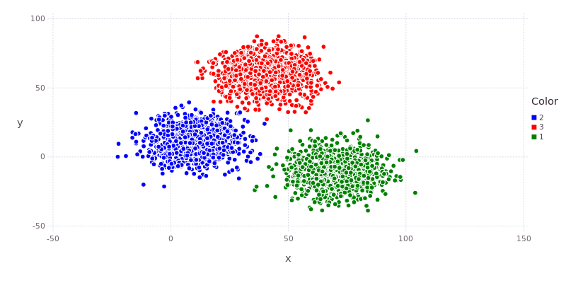
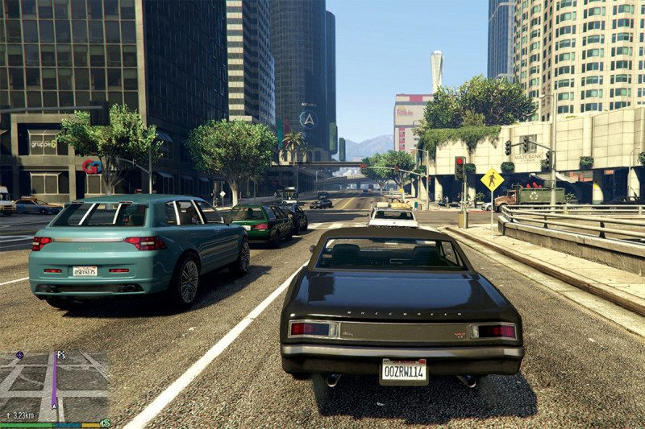
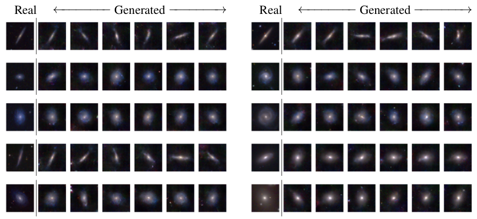
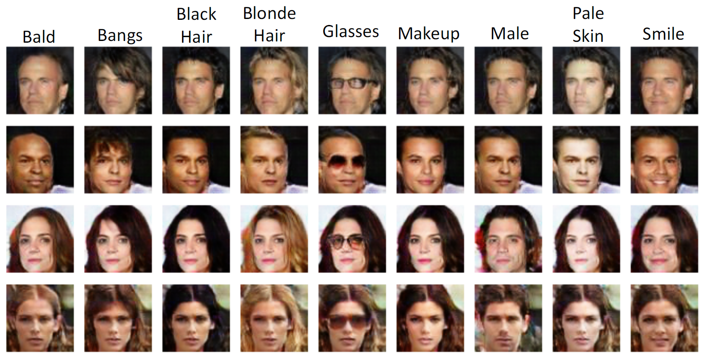
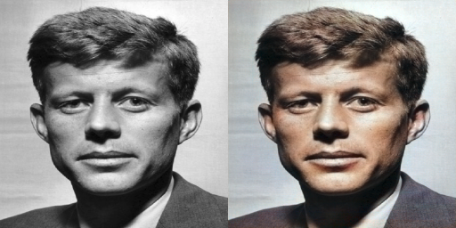
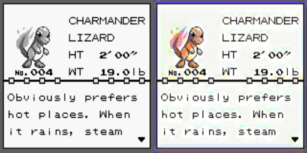
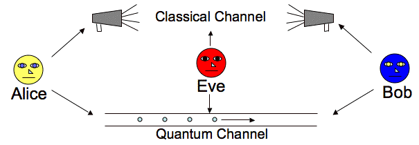

Projects
This page contains some projects I'm working on in my spare time or in class aside from publications.Home
AstroGAN

[github]
Leveraging Generative Adversarial Networks to generate galaxies with specific morphologies.
This is able to condition galaxy generation on continous variables like redshift. The model
is able to generalize and generate realistic looking galaxies at redshift values outside of
what was seen during training.
Compute Features

[github]
Using various pretrained networks to compute vector representations of images.
Useful for clustering, classification with SVM, etc.
Immitation Learning for Self-Driving Cars using GANs

[github]
[report]
[video]
Immitation learning using Generative Adversarial Networks. Unlike classical reinforcement learning,
here there is no reward or even optimal policy. This simply aims to immitate a human player. Currently
using Grand Theft Auto V as a sandbox environment.
On Applications of GANs

[report]
This is a report summarizing a few applications of conditional GANs I have been working on, from
underwater to stereo to galaxies.
Active Learning Classification Tool
 [github]
[github]
This is an in progress classification tool that makes use of a few active learning techniques
in order to train a classifier faster. Making use of an SVM, it will be able to use raw pixels
or features computed using a pretrained neural network from my Compute Features project above.
Conditional Wasserstein GANs

[github]
[report]
Conditional Wasserstein GANs for image editing. Using MNIST and the CelebA dataset, this is able to
generate images while restricting certain attributes that are wanted in the output.
Adversarial Colorization

[github]
[report]
Colorizing black and white photos using several types of GANs, namely
GAN, Least Squares GAN, Energy Based GAN, and Wasserstein GAN.
Enhancing 1st Gen Pokemon Games

[github 1]
[github 2]
The goal of this project is to enhance the colors and quality of gen 1 Pokemon games. After training a network
to restore colors and quality, I'll be aiming to plug it into an emulator.
BB84 Quantum Key Encryption Simulator

[github]
[report]
This is a Java simulation of the BB84 Quantum Key distribution method.